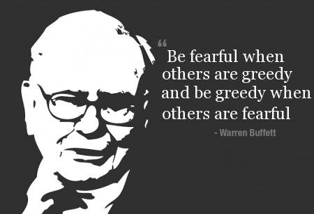

Dawn Pine (aka TheMaleBrain) is an Israeli 40+ divorced father of 2, former casualty of the blue-pill. Since he has taken the red pill his hobbies are: working out, writing, mentoring, harem management and self improvement.


Becoming part of the manosphere state of mind requires us to (in most cases) become an investor. Stocks, bonds, real estate (both in vitro and in-vivo), business, and any other investment options should become part of our financial life. The main reason for this, is what BLL noted:
Since the Alphas main investment is in himself and his needs, he also secures that regardless of the outcome he has increased his principal.
BLL was talking about Gender Relations, but one can easily apply it to its own financial welfare. What I have noticed is that there is an hierarchy of needs, which actually translates into actions. This was based on reading an article (in Hebrew) about that specific subject and its applications. As an individual investor, each one of us has to consider a lot of things about one’s investment:
Each ones of the above influences yield, risk and eventually our future financial situation. This does not mean that they are equally important. It is the same concept which states that “Strategy before tactics. Always!” Most people deal with tactics such as “Which stock should I pick?” or “Should I switch brokers for an additional reduction of 0.15% in fees?” This is exactly like dealing with the question of “Which line should I use to diffuse last-minute resistance?” Getting your shit together is more important.
In order to help readers better understand what I mean, here is a diagram:
The Investor’s Pyramid of Needs (Source http://www.hasolidit.com)
I’m referring to the stock market, as I believe most readers have some stake in it (either individually, or via 401k). Let’s go over it and explain (top to bottom).
One can easily lose one’s head in all the noise about stocks. Commentators, analysts, and every one around has his own idea on which stocks to pick and why. Just like girls on Instagram, the change in opinion is on a whim. That is just the equivalent of “Can’t see the forest for the trees”.
Picking the actual stock (or bond, or ETF or whatever) is the last thing an investor should do. This is your final act, so it has to be based on strategy.
If one is after a broker account or a trust fund, the best one can do is lower the fees as much as possible. That’s a “No Brainer”. The lower the fees the more money you keep in your pocket – in the long run.
Sure, some funds may have better return in a year or a couple of years. However, looking over a long time span, those fees eat up the profit. The longer your outlook the better. One thing though, reduction of 0.5% of fees will be evident in about 5 years, so do note that if your time-span is less.
Tax shelters are the ability to pay the least amount of tax it is possible under the law. I’m not a tax expert, but it is important that even if you reduce management fees, the tax may eat up your revenues. That is why it is suggested that one should consult at least one tax expert on which type of investment one chooses. This has the potential of making the 0.5% fees difference discussed above completely irrelevant.
The decision of what part of your portfolio you allocate to each type of risk is the projection of your risk aversion personality. Asset allocation is the main issue behind the portfolio. You need to pick it in a way that will enable you to sleep at night (How much are you willing to stomach if your worth is down – 5%? 10%? 25%? 50%?). That one is entirely up to you and your character.
As a rule of thumb, the younger you are – the more riskier your portfolio should be (i.e. stocks).
Asset allocation is how much you can stomach a loss. But investment in a specific market, niche or industry is what will make you fragile, rather then anti-fragile.
If you invest in 10 stocks you get some sort of a yield. Now make it 100 stocks, and the yield can stay the same, but the risk will be reduced. Spreading the risk on multiple assets (and not by allocation, which was discussed above) is an actual “Free Lunch”. No one knows which stocks or industries or countries will shine, that’s why you spread the risk to ensure you are not exposed to a “non systematic” risk.
And to the commentators who will state the observation of how 2008 showed us that everything can fall at the same time, I’ll answer that it’s the same as saying that one wants a bullet-proof approach to girls so one will not be rejected. That’s not going to happen.

The most important lesson of self improvement is discipline. This is the only way to achieve something. The same is true when we are talking about investments.
Fear, greed, euphoria, panic, and other emotions and reactions are some of our worst enemies. They make you buy high and sell low. Become Ulysses – bound yourself to your mast (strategy) and refuse to move when the market sirens sing their song. If you can do that, your “Buy and Hold” strategy will work.
One note though – strategy means also to asses your situation and align it with the goal. This means you may change your behavior, but on your own terms.
The earlier you start to invest, the sooner you become economically free. The longer you wait, the more savings you will need in order to compensate for the compound interest lost.
Leaving below your means and saving is the most important need of all. If you reject the hedonistic/consumerist mindset and focus on saving a nice portion of your income, you will be able to invest. If you don’t – all of the above is worthless.
I hope I was able to clear the subject a bit. My message is simple: focus on a minimalist lifestyle in order to be able to save money, play the long game, DISCIPLINE DISCIPLINE and more DISCIPLINE, spread the risk and allocate your assets, note the tax and fees and then and only then pick your investment.
Read Next: The Quest For Financial Independence In A Welfare State